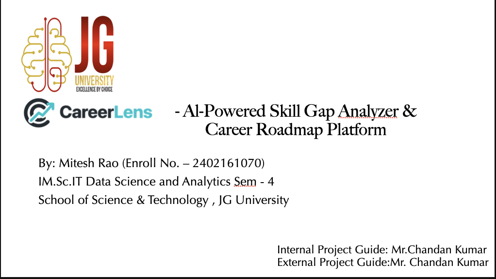

CareerLens is a full-stack AI platform that analyzes resumes against the EU's ESCO taxonomy to deliver transparent skill-gap scores and personalised learning roadmaps — for students and recruiters alike.
ESCO Occupations
Skills Analysed
Skill Relations
Tests Passing
Upload PDF/DOCX, get a calibrated 3-tier skill coverage score instantly
LLM-generated learning paths with curated resources per missing skill
Batch-rank up to 10 candidates with decision scores & risk levels
Context-aware career coach, roadmap guide & recruiter helper bot
Millions of job seekers get rejected by ATS systems without ever knowing which specific skills they're missing — and have no structured way to close those gaps.
Candidates don't know which of the 50–150 required skills for their target role are missing from their resume
ATS systems silently reject resumes via keyword matching — zero feedback, zero transparency
Even when gaps are vaguely identified, there's no personalised, phase-by-phase learning path with real resources
Jobscan charges $50+/month. Free alternatives lack industry-standard taxonomy & explainability
A well-qualified resume only mentions 25–35% of ESCO skills for a role. Without calibration, every resume looks under-qualified. CareerLens solves this with exponential calibration scoring.
Upload resume → Select target role → Get ESCO-aligned 3-tier analysis + personalised AI roadmap — all in seconds, completely free.
PDF, DOCX, TXT — client-side parsing via pdf.js & mammoth.js. No server file storage.
Token-overlap F1 scoring resolves any role input to the best ESCO occupation from 3,007
Core / Secondary / Bonus tiers with confidence engine & exponential calibration
Personalised learning path enhanced by Qwen/LLaMA LLM via HuggingFace Router
CareerLens doesn't just score you — it tells you exactly which skills to learn first, in what order, with real resources.
ESCO "essential" relations — non-negotiable for the role. Miss penalty amplifies overall score impact. Confidence threshold: ≥ 0.24
Optional + "knowledge" type — domain theory and concepts. Important for depth. Confidence threshold: ≥ 0.22
Optional + "skill/competence" — extra tools, frameworks. No miss penalty but boost score. Threshold: ≥ 0.20
How it works:
Roadmap Output:
Not another resume scanner — a complete, transparent, ESCO-powered career intelligence platform.
Built on the EU's official ESCO dataset — 3,007 occupations, 13,896 skills, 123,788 relations. Not keyword guessing.
See exactly why you got your score — confidence values per skill, frequency & context signals, tier breakdown. Full transparency.
100×(1−e^(−4×raw)) — accounts for the fact that keyword matching captures only 25–35% of ESCO skills. 30% raw ≈ 70% calibrated.
Students get gap analysis + roadmaps. Recruiters get batch ranking, decision scores, risk levels & shortlist recommendations.
Primary ESCO scoring fused with O*NET alignment (82/18 weighted blend) for robust cross-taxonomy validation.
No paywall, no trial limits. Full analysis + roadmap + AI bot — free for students. Open-source ready architecture.
CareerLens isn't just for students — recruiters can rank, compare, and shortlist candidates with data-driven precision.
Upload up to 10 resumes against one role. Auto-ranked by decision score — no manual screening needed.
Weighted formula: 62% Core + 23% Overall + 10% Secondary + 5% Bonus — with breadth & core-gap penalties.
Low / Medium / High risk levels based on core coverage & gap ratio. Color-coded for instant readability.
Auto-classified: "High Priority Shortlist", "Interview Recommended", "Conditional Review", "Future Pipeline"
Core / Language / Other breakdowns per candidate. Matched vs missing — structured for quick comparison.
Intent-detecting bot in "Recruiter Helper" mode — generates interview questions, risk summaries, shortlist recommendations.
OTP email verification, JWT tokens, password reset flow, 2FA login, role-based routing — Student & Recruiter
3-mode intent detection: Career Coach, Roadmap Assistant, Recruiter Helper. Qwen 2.5 via HuggingFace Router API
Logistic Regression / Random Forest (scikit-learn). Predicts recruiter fit probability — AUC, F1, feature importance
Dual provider: SMTP (Gmail) + Resend API. OTP, newsletter welcome, contact form — all with CareerLens branded HTML
Phase descriptions, step-by-step actions, learning objectives & curated resources. Quality gate enforces relevance.
No-login public demo at /demo with hardcoded data — lets anyone try the full analysis experience instantly
ESCO Occupations
ESCO Skills
Skill Relations
Tests Passing
React 19 SPA deployed on Vercel CDN. Auto-deploy from GitHub. Custom domain: careerlens.in
FastAPI on Render Docker container. Auto-deploy, health checks. API: careerlens-api-imy1.onrender.com
LibSQL (SQLite-compatible) cloud database. Migrated from MySQL for edge performance. REST API adapter.
ESCO Occupations
Skills Mapped
Tests Passing
Questions? Let's discuss!
CareerLens — Where Careers Come Into Focus
Mitesh Rao · IM.Sc.IT Data Science · JG University · 2026